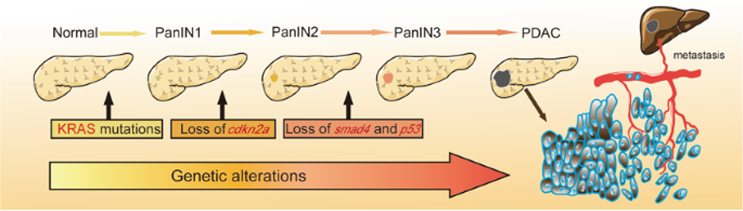
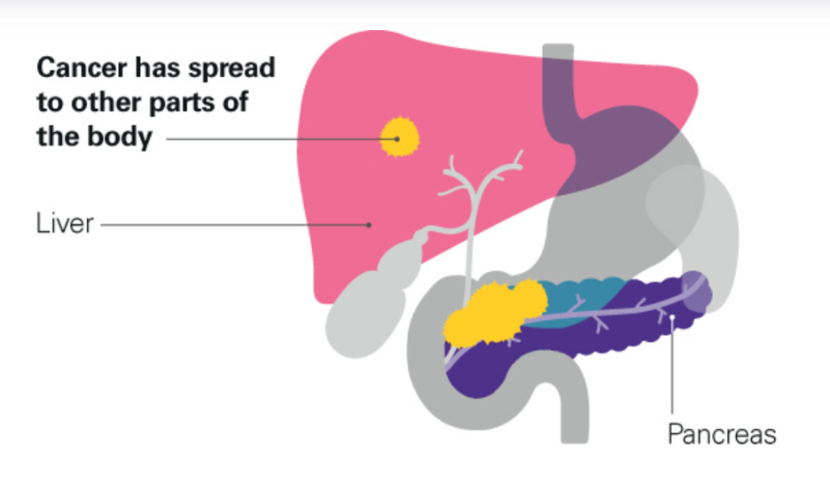
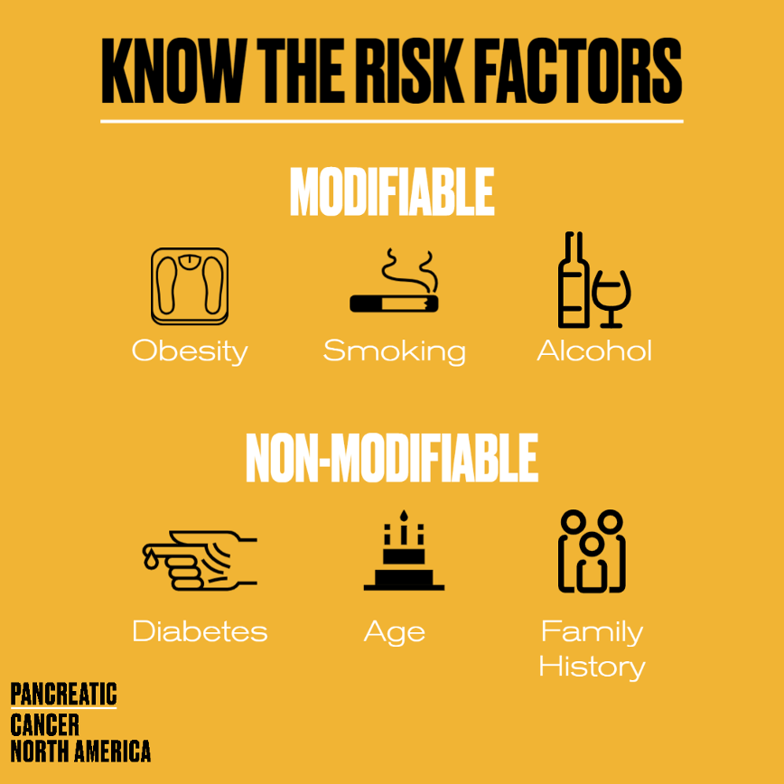
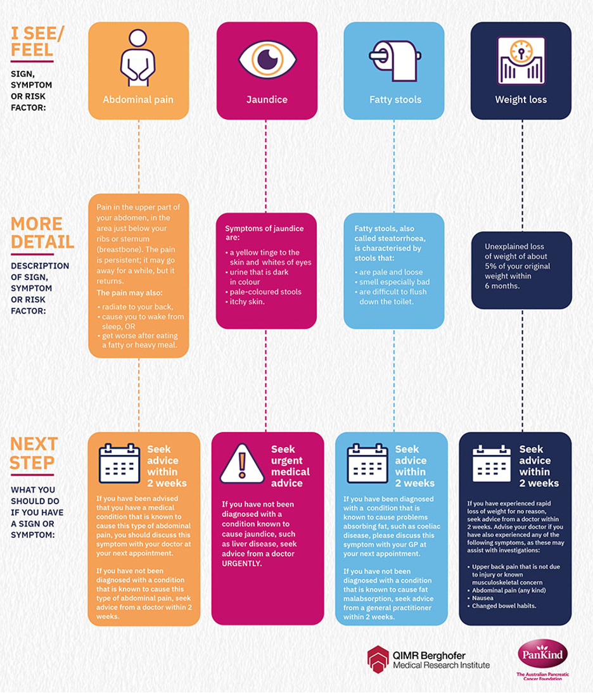
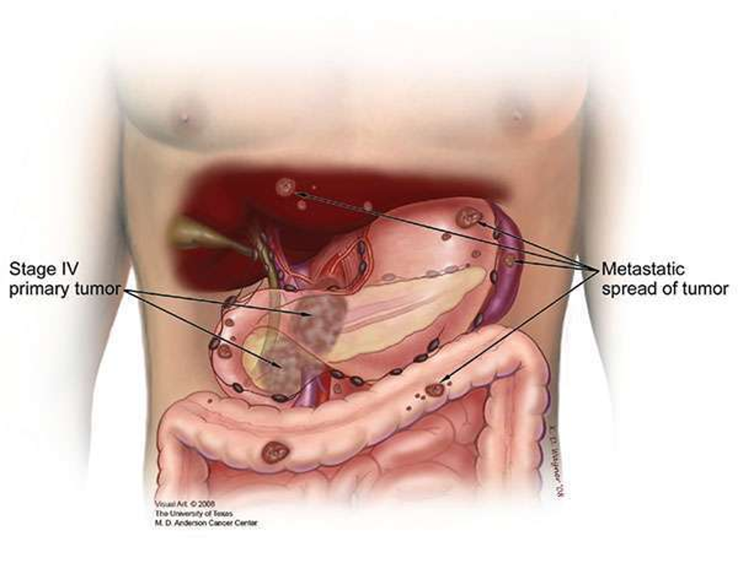

Overview
Pancreatic cancer is a serious illness affecting the pancreas, a gland behind the stomach. This condition occurs when some cells in the pancreas behave abnormally, leading to various health issues. Consider the pancreas as a crucial organ that generates digestive enzymes and controls blood sugar. In some cases, genetic mutations, like changes in the K-ras gene, can occur and act as the initial spark for cancer development. These genetic changes disrupt the normal checks and balances that control cell growth, allowing cells in the pancreas to divide and multiply uncontrollably. Over time, more genetic mutations in normal pancreatic tissue lead to precancerous lesions called pancreatic intraepithelial neoplasia, also known as PanIN. PanINs inch closer to becoming a full-blown cancer with each new genetic alteration (figure 1).
Figure 1: Stages of pancreatic cancer development
Stages of pancreatic cancer development, from normal pancreatic tissue to pancreatic ductal adenocarcinoma (PDAC), the most common type of pancreatic cancer.
Stages of Pancreatic Cancer
Stages of pancreatic cancer development, from normal pancreatic tissue to pancreatic ductal adenocarcinoma (PDAC), the most common type of pancreatic cancer.
Pancreatic cancer is known for its aggressive nature and rapid spread. Cancerous cells are not localised and can quickly spread to other body parts through the bloodstream or lymphatic system. This significantly complicates treatment if the cancer has metastasised to other organs, such as the liver or lungs (Figure 2).
Figure 2: Metastasis of pancreatic cancer
Pancreatic cancer can spread to other parts of the body through the bloodstream or lymphatic system. This is called metastasis. Metastatic pancreatic cancer is more difficult to treat than early-stage pancreatic cancer.
Risk Factors
Although the causes of pancreatic cancer are not fully understood, it is believed to result from a combination of factors. Some of the risk factors that result in pancreatic cancer are tobacco, excess alcohol consumption, obesity, a diet that is high in fat, polyunsaturated fats, processed meats, and genetic factors (Figure 3). Pancreatic cancer can be diagnosed through pancreas computed tomography (CT) angiography with the chest and pelvis used to assess vascular anatomy.
Figure 3: Risk factors for pancreatic cancer
Pancreatic cancer is caused by a combination of factors, including tobacco, excess alcohol consumption, obesity, a diet that is high in fat, polyunsaturated fats, processed meats, and genetic factors.
Symptoms
Pancreatic cancer sometimes does not show symptoms in the early stages and would only show symptoms in the advanced stage. Patients who show symptoms include decreased appetite, indigestion and change in bowel movement. Most of the tumours found in the pancreas are on the head, which leads to biliary obstruction that causes dark urine, jaundice, decreased appetite, tiredness, loss of weight, and exocrine pancreatic insufficiency (Figure 4). Suppose the individual has tumours on the body and tail; in that case, this can result in non-specific pain in the abdomen region.
Figure 4: Symptoms of pancreatic cancer
Pancreatic cancer often does not cause symptoms in the early stages. When symptoms do occur, they can include decreased appetite, indigestion, change in bowel movement, dark urine, jaundice, decreased appetite, tiredness, loss of weight, and exocrine pancreatic insufficiency.
Treatment Challenges
Pancreatic cancer treatment poses significant challenges. The tumour creates a unique environment around itself. It's like cancer forms its ecosystem. This ecosystem includes a thick, fibrous tissue known as the stroma, immune cells, and other components. This stroma acts as both a shield and a barrier. On one hand, it shields the tumour from the body's immune system, making it difficult for the immune cells to recognise and attack the cancer (figure 5). On the other hand, it acts as a barrier, making it challenging for medicines to reach the tumour and fight against it.
Figure 5: The unique microenvironment of pancreatic cancer
This microenvironment includes a thick, fibrous tissue known as the stroma, immune cells, and other components. The stroma acts as both a shield and a barrier, protecting the tumor from the body's immune system and making it difficult for drugs to reach the tumor.
Take Action
Pancreatic cancer is a life-threatening disease that requires our attention. By gaining knowledge about the symptoms, risk factors, and available treatments, we can take proactive measures to safeguard our well-being and that of our family members. It is essential to stay informed and take action, as early detection is critical to improving the chances of successful treatment.
The video provides a brief overview of pancreatic cancer, including its symptoms, risk factors, and treatments. Pancreatic cancer is a serious disease, but early detection and treatment can improve the chances of survival.
Contact Information
For more information about pancreatic cancer, you can call 131120 (Cancer Council, n.d.). Specially trained staff are available to provide information about pancreatic cancer and its treatment. Alternatively, you can also talk to your local general practitioner to discuss your concerns and if you are experiencing any signs or symptoms of pancreatic cancer.